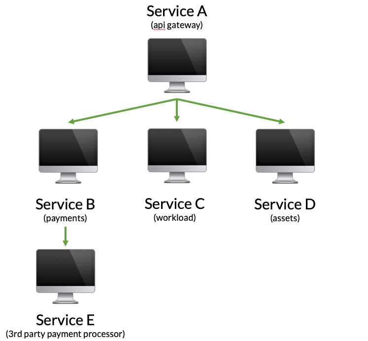
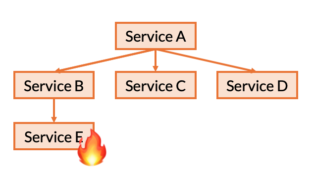
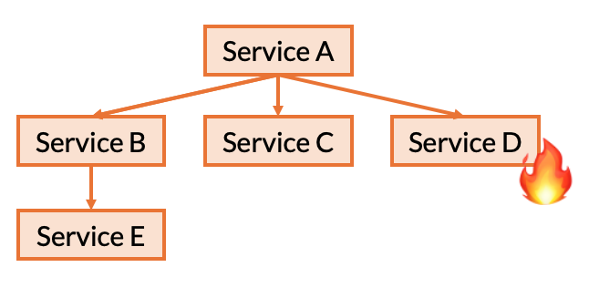
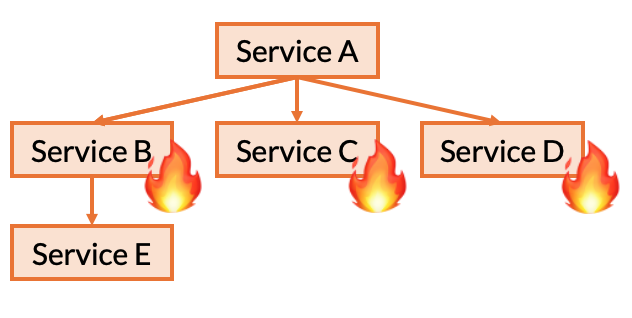
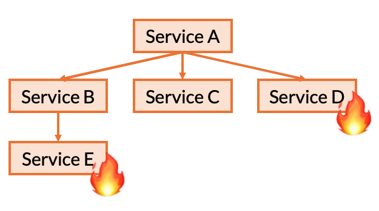
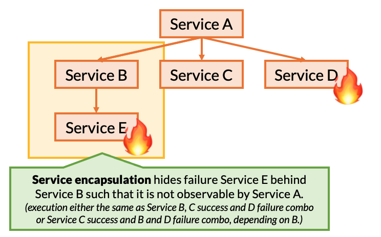
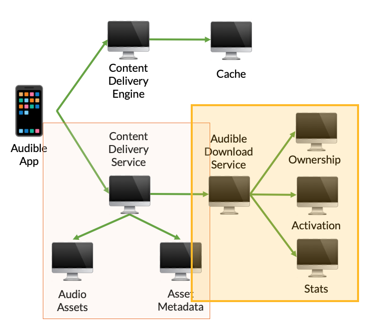
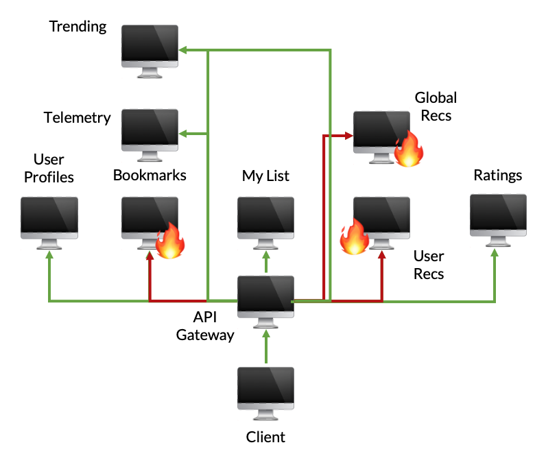

Dynamic Reduction
In this post, we’re going to look at how Filibuster can take advantage of certain properties of microservice architectures to reduce testing overhead: key to running resilience tests in development or CI before code ships to production.
Example: Ride Sharing
Let’s consider an example microservice application that might back a ride sharing service.
In this example, a few things are happening:
First, the API gateway is contacted by the mobile app to display to a driver a page that estimates how much money they might make driving tonight.
The API gateway contacts the payments service, which in turn pre-authorizes a payment using a 3rd party payment processor that has 99.9% uptime.
After that, a workload service is contacted that returns the estimated workload, perhaps using a ML model.
Finally, a assets service is contacted to retrieve required stylesheets and other image assets needed to display the page.
This application has some failure handling built in already:
If the payments service fails for any reason – or if it’s dependency is unavailable – the error is ignored and payments will be authorized at a later date. We ignore failures here and perhaps log some information for offline reconciliation.
If either the workload or assets service is unavailable, the request returns a 503 Service Unavailable to the mobile client, the mobile client handles this error and prompts the user to try again.
We start with a functional test that looks like the following:
def test_functional_load_drivers_page():
username = "cmeiklejohn"
uri = "http://api-server/drivers/{}".format(username))
result = requests.get(uri)
assert result.status_code == 200
This test only assumes a fault-free execution and doesn’t consider, or specify, what the application behavior should be, under fault.
Applying Filibuster
We test this application using Filibuster, which causes us to make the first modification when Service D fails from fault injection.
def test_functional_load_drivers_page():
username = "cmeiklejohn"
uri = "http://api-server/drivers/{}".format(username))
result = requests.get(uri)
if filibuster.assertions.was_fault_injected():
assert result.status_code == 503
else:
assert result.status_code == 200
Then, we make another modification when Filibuster executes the test where Service B fails.
def test_functional_load_drivers_page():
username = "cmeiklejohn"
uri = "http://api-server/drivers/{}".format(username))
result = requests.get(uri)
if filibuster.assertions.was_fault_injected():
if filibuster.assertions.was_fault_injected_on("payments"):
assert result.status_code == 200
else:
assert result.status_code == 503
else:
assert result.status_code == 200
Great.
Failure Permutations
Now, we’re left asking what tests does Filibuster actually need to run, while performing resilience testing?
First Principle: Tolerance to Failure of Single Service
We know that we need to, at a minimum, test tolerance to a single failure of one of each service’s dependencies. Let’s use the ride sharing example to understand what we mean.
First, we need to test how Service B reacts to it’s only dependency, Service E failing. We need to do this for each of the ways that Service E can fail. For instance, any possible error responses that E might return to relay some sort of context-specific error (e.g., 404 Not Found) as well as any possible exceptions that Service B’s RPC client might throw (e.g., Connection Error, Timeout.) .
Similarly, we will also need to repeat this process for each of Service A’s dependencies as well. Starting with Service B, we repeat this process for Service B, C, and then D.
Second Principle: Permutations of Service’s Direct Dependencies
We also need to test the possible permutations of failures for each services’ direct dependencies. This is done for a very specific reason: the service’s implementation may contain a conditional based on a certain combination of failures.
In this example, it is possible that Service A contains code that performs a very specific action when Service B and Service D fail together for a particular exception type.
Therefore, we also iterate these combinations as well: assuming a single failure, this would result in the combinations (B, C), (B, D), (C, D), and (B, C, D).
But, we’re left with the question: do we need to test the combination where Service E and Service D fail together?
The answer is: no.
Dynamic Reduction
This is the basis of our algorithmic optimization for service-level fault injection testing (SFIT) that we call dynamic reduction.
Here’s the intution behind dynamic reduction:
We have already tested the effect on Service A when Service D fails.
We have already tested the effect on Service B when Service E fails.
We have already tested all of the possible failures (and success) outcomes from Service B, as directly observable by Service A.
From these known outcomes, we already know what the outcome of this test will be from outcomes we have already observed.
Now, it is important to note that we know this information based on the following assumptions we place on the functional test being executed: a.) service responses, as part of this single functional test execution, are fixed; b.) service outcomes are not dependendent on previous failures; and c.) the functional test is free from observable nondeterminism, either scheduling or data nondeterminism. In short, dynamic reduction is not sound in general, but only with these assumptions.
The property that we exploit here, we refer to as service encapsulation: the idea that when Service E fails, it’s failure is not directly observable by Service A, but rather only visible through Service B, by the response that Service B returns to Service A. Therefore, if we can identify the possible responses that can be returned by Service B and test A’s resilence to these failures, we do not need to redundantly test A’s direct dependencies along with failures deeper in the call chain.
However, this optimization relies on the fact that service implementations return error codes that are conditional on the behavior of their dependencies and do not encode the failure into a response that is considered successful. As an example, if Service B returned a successful response to Service A that contained a boolean indicating whether or not Service E responded to it’s request successfully, then this optimization would not be sound (as stated above, it is not generally sound.) We believe that this type of design where errors are encoded through error responses in failures is very important: it enables compositional reasoning that can directly reduce testing overhead.
Audible vs. Netflix
As part of our [corpus creation](http://christophermeiklejohn.com/filibuster/2021/10/02/filibuster-1.html), we recreated part of Audible and Netflix’s infrastructure from information we gethered by watching publicly available talks on their uses of chaos engineering: a super accurate reimplementation of each service isn’t extremely important here, because the more interesting, general point, is the graph structure.
You can see this benefit in the recreation of Audible’s infrastructure for our corpus. In this example, to generate all of the possible tests required for full coverage of two possible call site exceptions and a number of service-specific error codes that are returned, we had to generate 69 tests, but only needed to execute 31 of these tests: service encapsulation can be exploited as the Audible Download Service and Content Delivery Servies hide the failures of their components from the rest of the application.
Deeper, microservice graphs, enables compositional testing through service encapsulation.
Graphs that grow wider, rather than deeper, do not benefit from these types of optimizations.
To contrast, this is a recreation of the Netflix homepage loading process in our corpus. Here, there’s a large fanout from a single service where a number of fallbacks are specified. As we demonstrated above, we need to test all of the combinations to ensure that there doesn’t exist application code conditional on some set of failures. Therefore, we are left with a combinatorial explosion: we have to generate 1,606 tests and can only remove 3 of those tests through dynamic reduction (resulting in 1,603 executed tests.)
In fact, while this component of Netflix doesn’t share the desired structure to take advantage of this compositional testing, the larger Netflix graph does (seen below): a property that we believe holds for most microservice applications as evidenced by our Audible example, the Netflix example, and an example service graph we saw from Expedia as part of our corpus construction.
<img src=”/img/netflix-topology.png” width=”600”>
If you’re interested in learning more about dynamic reduction, stay tuned for our upcoming ACM SoCC ‘21 presentation and paper where we talk about it in detail.
Wrap-Up
This was a short introduction to an optimization for service-level fault injection testing with Filibuster, called dynamic reduction, that reduces the overhead of resilience testing in the local development environment. With our upcoming release of Filibuster, we will release full documentation on our tool, an example corpus and this tutorial.
Stay locked in by following us [@FilibusterFault](http://www.twitter.com/FilibusterFault) on Twitter to know when our next post will be available.